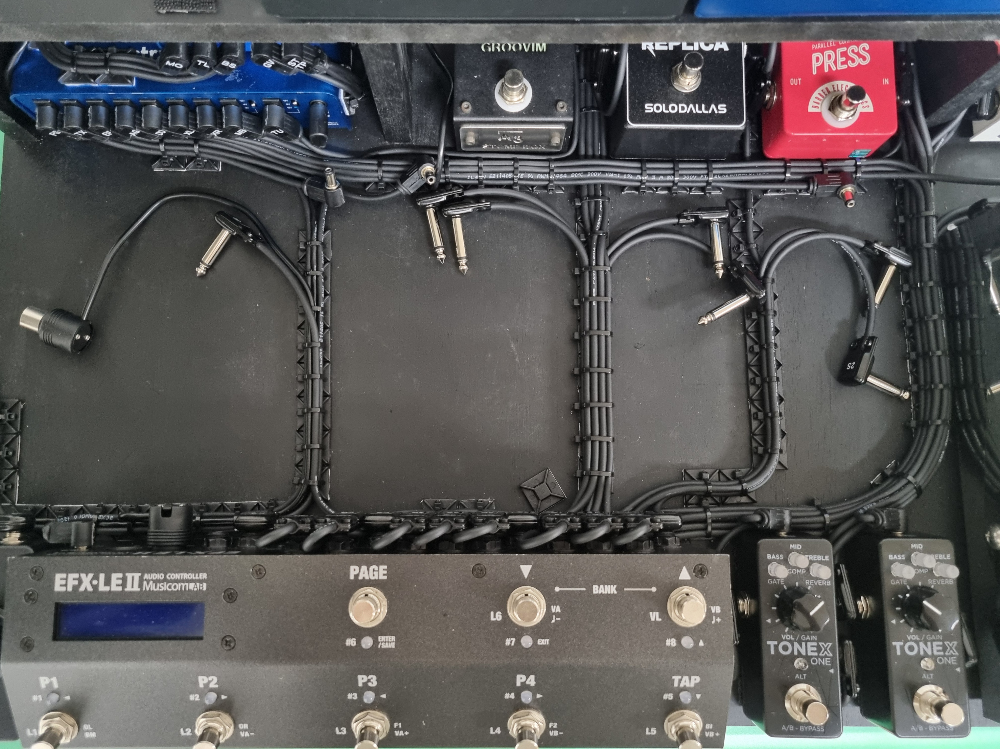
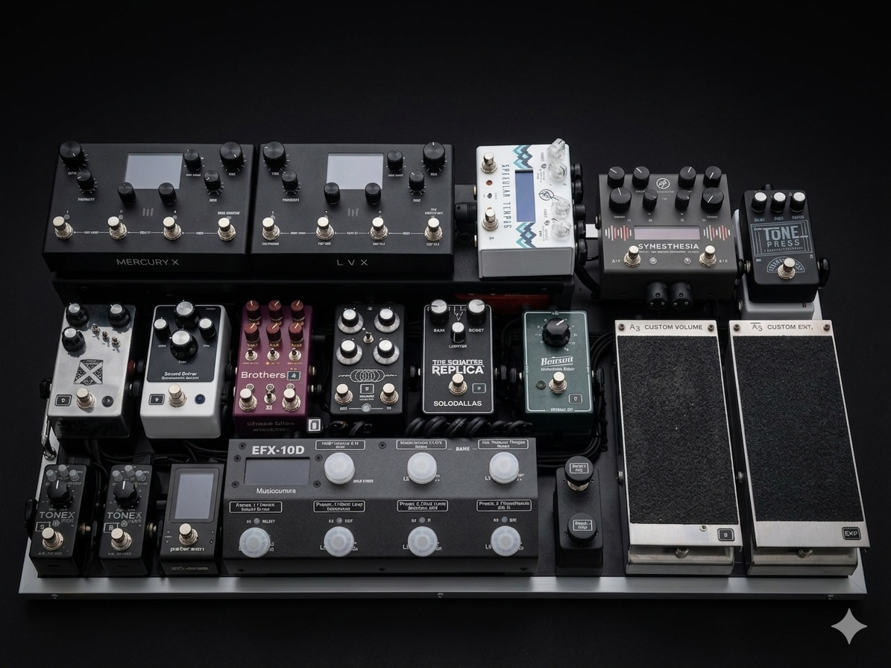

최근 작업물

루프 스위처 기반의 다기능 미디 매핑 및 라우팅 최적화 셋업
공간계 이펙터 프리셋 매칭 및 실전 지향형 앰비언트 사운드 셋업
멀티 이펙터와 개별 페달의 동시 구동을 위한 고효율 직렬 레이아웃
TrueBoard의 빌드 기준
루프 스위처와 MIDI 제어 메커니즘에 대한 명확한 분석을 바탕으로, 복잡한 신호 체계 안에서도 오작동 없는 직관적인 레이아웃을 구현합니다.
모든 DC 라인, 커스텀 패치 케이블뿐만 아니라 루프 스위처 채널과 개별 이펙터 상단까지 전용 라벨링 작업을 적용하여 무대 위에서의 가시성과 유지보수 편의를 극대화합니다.
Mogami, Canare, Squareplug, Kobiconn 등 검증된 자재를 기반으로 프리미엄 땜납(Kester No-Clean)과 전문 장비(Hakko FX-888D)를 사용하여 모든 접점을 견고하게 마감합니다.
의뢰 및 작업 프로세스
TrueBoard는 개별 장비 구성에 맞춘 1:1 커스텀 상담을 통해 최종 견적을 확정합니다.
※ 페달 기어 개수 및 멀티이펙터/펑션 장비 포함 여부에 따라 공임비가 추가되며, 케이블 총 길이에 따라 공임이 변동될 수 있습니다. (잡자재비 포함)
기본 미디 신호 개념부터 본인의 플레이 스타일에 맞춘 레이아웃 설계 및 직접 세팅 가이드까지 포괄적으로 교육합니다.
보드 셋업 외에도 외장 악기/마이크 연결용 케이블(XLR, Instrument), 맞춤형 패치/DC 케이블 단품 제작도 상시 가능합니다. (암페어·볼티지 더블러, 스플릿 DC, 센터 플러스 변환 및 TRS 모디파이 등 다양한 미디/전원 규격 케이블 대응 가능)
소지하고 계신 장비 목록 및 원하시는 보드 레이아웃을 말씀해 주시면 상세히 안내해 드립니다.
상담 및 견적 문의하기